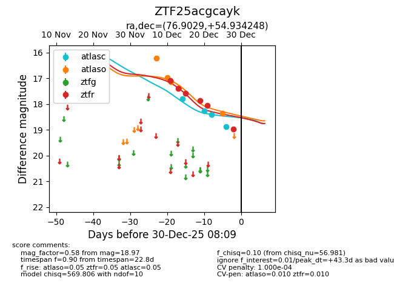
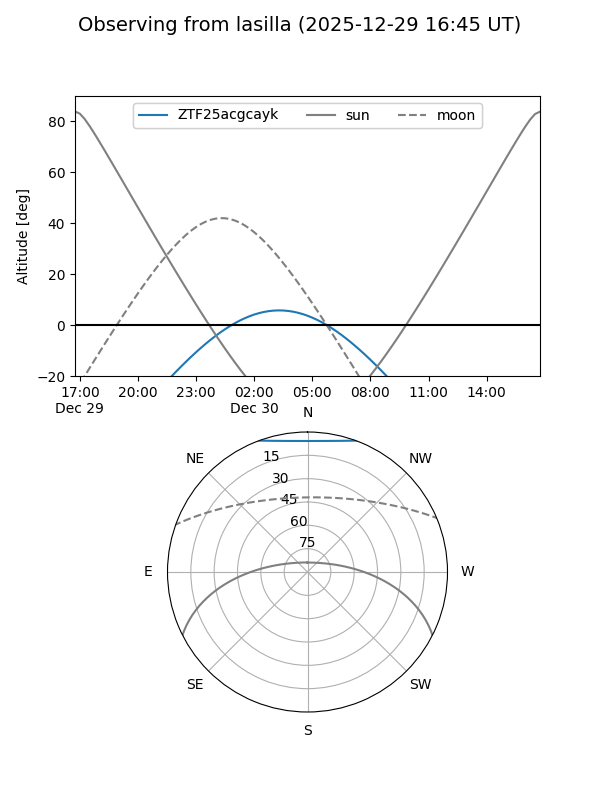
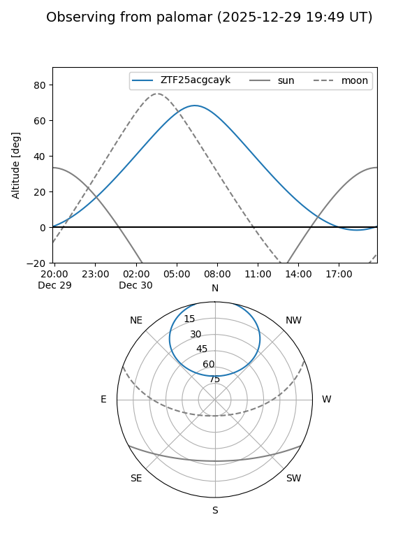
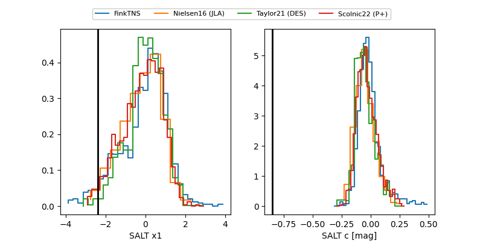

ZTF25acgcayk
Target ZTF25acgcayk at 2025-12-30 08:11
Aliases and brokers:
FINK: fink-portal.org/ZTF25acgcayk
Lasair: lasair-ztf.lsst.ac.uk/objects/ZTF25acgcayk
ALeRCE: alerce.online/object/ZTF25acgcayk
alt names
ZTF25acgcayk (ztf,fink_ztf)
Coordinates:
equatorial (ra, dec) = 76.9029,+54.93425
equatorial (HMS+DMS) = 05:07:36.71,+54:56:03.29
galactic (l, b) = (154.4272,+8.59354)
Flags:
likely cv
Photometry:
last atlasc=18.87, atlaso=18.35, ztfr=18.97
4 atlasc, 5 atlaso, 6 ztfr detections
Lightcurve

Visibility


Additional plots
